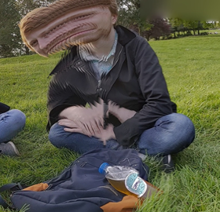

Zedex
Warning:
This game is still in the alpha stage of development. There areas that need significant improvement, but we hope this serves as a nice proof of principle. Enjoy!
Introduction
What is the game?
Zedex is a quantum game that utilises the ZX calculus as a means for players to rewrite and reconfigure quantum circuits. A circuit can be represented as a ZX graph object containing nodes (called spiders) and connecting edges.It has been shown that the ZX calculus is universal and complete for pure qubit quantum information, therefore a ZX object is a valid representation of a quantum circuit. The ZX calculus comes equipped with a set of rewrite rules which allows for conversions between equivalent graphs, changing the makeup of the circuit’s gates while still being equivalent to the overall unitary operation. Zedex utilises a subset of these rewrite rules to allow the user to manipulate the ZX object with the aim of simplifying a quantum circuit and improving its mapping to an underlying architecture. The ZX rules can be performed on the graph using intuitive clicks and movements of the mouse and the spider nodes can be dragged around as the player wishes. Users are then scored according to how well they map the circuit to the architecture and, where possible, are presented with an updated circuit to view the result of their manipulations.
What are the rules?
The Spider Identity Rule:
If a spider, with no phase, is connected in a diagram with only two wires connected, then it can be treated as an identity. This rule is implemented by a single click on the spider. This can also be used to place a spider with 0 phase onto any black wire within a diagram.
The Colour Change Rule:
This is implemented by double clicking on a spider and has two effects. The selected node colour is swapped and all black wires connected to the spider are replaced with a blue wires and vice versa.
The Node To Spider Rule:
This rule is implemented by a single click on the starting node which produces a red spider.
The Spider Fusion Rule:
When two spiders of the same colour are directly connected by a black wire they can be fused. The Spider Fusion rule is applied by dragging one of the spiders onto the other.
The Spider Slice Rule:
The inverse of the Spider Fusion is Slicing. This is applied by drawing a line across the spider, which produces two spiders of the same colour connected by a black wire. The sum of the phases of the two new spiders equal the phase of the initial spider.
Can I play the game now?
YES!
You now have all the tools you need to go and play the game! Feel free to go and have a play round, and get a feel for the game.
If you wish to understand optimal strategies for playing the game then have a read of the 'Tutorial Level'. Enjoy!
Tutorial Level
Optimising a GHZ circuit:
 Here is one example of how a level in our game can be completed, which shows the GHZ example. The level starts in (a) with the basic GHZ state. This Figure shows that the initial ZX graph would require a large number of swap gates to be implemented in its current form. As this circuit takes in a set of qubits in a specified state, the qubit to spider rule can be applied to pull four red spiders out of four of the nodes, as shown (b). From this the four red spiders can then by fused with the other red spiders that they connect to via the spider fusion rule, as shown in (c). Now that the red spiders only have two wires connected and a phase of 0 Rad they can be treated as identities and the spider identity rule can be applied. This gives a graph as shown in (d).
Here is one example of how a level in our game can be completed, which shows the GHZ example. The level starts in (a) with the basic GHZ state. This Figure shows that the initial ZX graph would require a large number of swap gates to be implemented in its current form. As this circuit takes in a set of qubits in a specified state, the qubit to spider rule can be applied to pull four red spiders out of four of the nodes, as shown (b). From this the four red spiders can then by fused with the other red spiders that they connect to via the spider fusion rule, as shown in (c). Now that the red spiders only have two wires connected and a phase of 0 Rad they can be treated as identities and the spider identity rule can be applied. This gives a graph as shown in (d).
 This state can then be moved to better fit the architecture. By applying the Qubit to Spider rule the node of qubit 0 can be changed to a spider and then be converted back to a node at a position that better suits the architecture, as shown in (e) and (f). Using the Spider Fusion rule the five green spiders can be fused to produce the diagram in (g). By applying two slices on the single green spider in (g) two more green spiders can be made in the positions shown in (h). These slices were done such to slice along the path of qubit 2 and to produce green spiders that spread out in a column.
This state can then be moved to better fit the architecture. By applying the Qubit to Spider rule the node of qubit 0 can be changed to a spider and then be converted back to a node at a position that better suits the architecture, as shown in (e) and (f). Using the Spider Fusion rule the five green spiders can be fused to produce the diagram in (g). By applying two slices on the single green spider in (g) two more green spiders can be made in the positions shown in (h). These slices were done such to slice along the path of qubit 2 and to produce green spiders that spread out in a column.
 The central green spider can then be further sliced to separate this column of spiders into two columns of two spiders. Each of these two new spiders connect to two output nodes as shown in (i). The Spider Identity rule can then be used to place four red spiders into the diagram, in such a way that the new graph optimally fits the architecture. This can be seen in (j) and (k). The Spider Fusion rule can then be used to perform a slice on all of the red spiders in order reconnect the circuit back to the nodes, as shown in Figure (l). This then produces the circuit that optimally fits the architecture, but only for the specific input state. The output of this circuit and the initial circuit may differ if any other input state is used.
The central green spider can then be further sliced to separate this column of spiders into two columns of two spiders. Each of these two new spiders connect to two output nodes as shown in (i). The Spider Identity rule can then be used to place four red spiders into the diagram, in such a way that the new graph optimally fits the architecture. This can be seen in (j) and (k). The Spider Fusion rule can then be used to perform a slice on all of the red spiders in order reconnect the circuit back to the nodes, as shown in Figure (l). This then produces the circuit that optimally fits the architecture, but only for the specific input state. The output of this circuit and the initial circuit may differ if any other input state is used.
Designers.
Our designers are thoughtfully chosen, meeting tough selection criteria such as; "Available":

Quinn Palmer
CEO & Founder
"We miss every shot we do and don't take."
Matthew Stafford
Theory
"Whats a Python?"

Seb Currie
Tea and coffee.
"At least we're not called Squamble"
Marcus Clarke
Level Design
"Look at my diagrams"
Alex Belsley
Tri-national.
"It's not going to work like that."
Tasos Fasoulakis
Olive oil procurement officer.
"Coop? *hand windmill*"
Acknowledments
pyZX
We make use of the open source pyZX library in order to implement many of the features of the game. We owe them a huge debt of thanks. A special thanks to John Van Der Wetering who took the time to talk us through some issues we've had.
Dr Chrys Woods
For valueable coding advice without which there would be no finished product.
W3 Schools
For the use of CSS templates.
Further Information
If you would like to take a deep dive into the physics theory behind our game, please feel free to take a dive into the report below. Zedex is described in detail in Section 4.